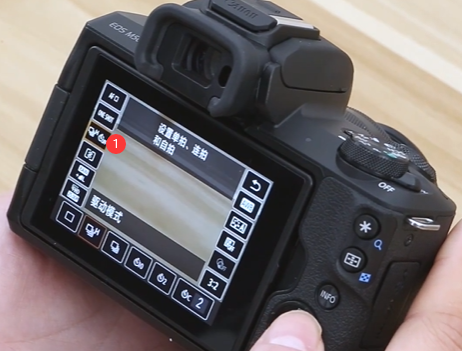

学习资源
【1】https://www.bilibili.com/video/BV1fk4y1m78c
【2】https://www.bilibili.com/video/BV1B5411877j
1. M50 机身符号和按键的意思
1.1. 镜头上按键和标志的意思
EF-M：半画幅、M卡口
15-45mm：镜头焦段
- 15mm：称为广角端，这个焦段镜头可调节的最大光圈是最后的F3.5
- 45mm：称为长焦端，这个焦段镜头可调节的最大光圈是最后的F6.3
- 非恒定光圈镜头，最大光圈是随着镜头焦段的变化而变化的
IS：佳能光学防抖标志
STM：步进式马达的意思
49mm：表示镜头口径。选择uv镜和遮光罩等配件的时候用得到
变焦开关锁：逆时针转动
1.2. 机身顶部和侧面区域按键的意思
ON/OFF：开机和关机拨杆
模式转盘
绿色A+：场景智能自动模式，傻瓜模式 ，所有参数都是相机自己搭配（新手）
P：程序自动模式
TV：快门优先
AV：光圈优先
M：全手动模式
小相机：录像模式
两个光圈：创意滤镜模式
SCN：特殊场景模式：如人像，风光等场景模式
A字符号：混合式自动模式：可以记录一段视频OR拍摄一张照片，类似于苹果手机的LIVE功能
黑色按键：相机快门按钮
相机主拨盘：用来调节相机的参数
红色按键：短片按钮，录像
M-Fn：多功能按钮，定义自己比较常用的参数快捷键
热靴：主要外接其他设备，如闪光灯
闪光灯：抬起来
1.3. 机身背部区域按键的意思
*：在查看模式下，放大照片
框框：在查看模式下，缩小照片
info：信息按键，在拍摄模式下，调出当前的拍摄信息；在查看模式下，调出照片信息
五维导航键：
- 上键：曝光补偿按钮
- 下键：删除按钮
- 左键：自动对焦AF和手动对焦MF的快速切换按钮
- 右键：控制闪光灯按钮
- Q功能键/SET确认键
小三角：查看按钮
menu：菜单按钮
2. 如何使用M50进行简单拍摄
2.1 闪光灯
作用：在光线不好的时候进行补光
2.2 变焦
变焦就是把远处的物体拉到近处来拍
对焦环：用于手动对焦
变焦环：拍近还是拍远
15 mm：镜头的广角端，在这个焦段可以拍摄近距离的物体，但是视野范文比较宽泛
广角端时候拍摄大场景，如风景照，合照
45 mm：长焦端，拍摄远处的物体，视野范文比较狭窄
长焦端适合拍人物和特写（如花草），会有一种背景虚化的感觉
改变焦距所实现的其他效果
- 背景虚化：镜头焦距越长，背景虚化程度约好
2.3 光圈
光圈主要是用来控制镜头进光量的多少，在相机中主要是用F+数字来表示
F后面的数字越小，光圈就越大，进光量就越多，反之，进光量就越少
光圈还可以改变背景虚化程度：
光圈越大，背景虚化越明显
拍摄花卉+人物特写：使用大光圈
拍摄合照+风景照：使用小光圈
光圈可以在M全手动模式+AV光圈优先模式下进行调节：
AV光圈优先模式下进行调节
M全手动模式
2.4 快门
快门主要是用来控制进光时间的
1/200：表示快门的速度是1/200s的意思
快门可以在M全手动模式+TV快门优先模式下进行调节：直接转动主拨盘既可以
快门数字越小，代表进光时间就越短，进光量就越少
快门数字越大，代表进光时间就越长，进光量就越多
如果要拍摄一段轨迹：长快门
如果要抓拍一个非常短暂的瞬间：短快门
2.5 感光度ISO
感光度：相机对光线的敏感程度
在光圈和快门一定的前提下：
- 感光度越低，画面整体越暗，但画质越好越细腻
- 感光度越高，画面整体越亮，但是会出现很多白色的噪点
显然感光度越低越好，但是在某些情况下我们也不得不使用高感光度：比如在拍摄夜景的时候，光线不好，而我们外出有没有带三脚架。这个时候我们开门时间不能设置的太慢，否则手持拍摄容易出现模糊。即时照片光圈调到最大，但是照片曝光还是不足，这时只能提高感官度。
感光度的调节可以直接滑动屏幕：平时设置成自动即可
2.6 曝光补偿
光圈、快门和感光度是摄影中最重要的三个参数，他们共同决定了照片的曝光
曝光补偿表：查看曝光是否正常
P&Tv&Av这三个模式下：曝光补偿默认为0，也就是在这几个模式下，我们拍出来的照片一般是曝光正常的
如果我们需要让照片有更亮或者更暗的效果，这就需要调节曝光补偿：
P&Tv&Av这三个模式如何调节曝光：
- 方式一：上键+主拨盘
- 方式二：直接屏幕
在M模式下：这时的曝光补偿表的作用是，提醒当前画面曝光是否正常
- 如果数值是负数，说明曝光不足，需要调大光圈、快门或者感光度，使指针重新归0
- 如果数值是正数，说明曝光过度，需要调小光圈、快门或者感光度，使指针重新归0
2.7 对焦模式
按住Q功能键，最左上角按键就可以选择（按左右键选择）对焦模式，一共有三种：
面部追踪对焦
区域自动对焦：意思是在指定区域内对焦
单点自动对焦（可以自己设置对焦点）
- 设置对焦点方式一：先按框框键，在通过五维导航键调整位置
- 设置对焦点方式二：点击屏幕
2.8 自动对焦操作
左排第二个，共同两种自动对焦模式：
- 单次自动对焦：指半按快门，相机只对焦一次，一般是用来拍摄静止的物体，对焦的准确性最高。半按快门，如果听到“滴滴声”表达对焦成功
- 伺服自动对焦：主要是来抓拍运动的物体
2.9 驱动模式（连拍/延时自拍）
连拍：按住快门不松开，相机就会一直拍，直到松开快门为止
- 高速连拍
- 低速连拍
延时自拍：就是按下快门后，相机会在某个时间点才开始拍照
- 10秒延时：拍一张
- 2秒延时：拍一张
- 自拍定时器连拍：固定时间为10秒，需要通过INFO按钮设置连拍次数
2.10 测光模式
测光模式：评价测光（用得最多，默认）、局部测光、点测光（用得最多）、中央重点平均测光
评价测光
当我们拍摄的画面整体亮度比较均匀，不存在非常大的明暗反差的时候，使用评价测光
点测光
在逆光条件下，如果我们用评价测光，相机会综合考虑整个画面的亮度，但是不会考虑人脸部的光线情况，因此人脸是暗的
这时要用点测光，并且对这人脸部来测光，让相机以人脸部的光线情况为曝光基准进行曝光，保证拍出的照片人脸部是正常的
2.11 白平衡
白平衡决定了相机对色彩的还原，主要有两个作用：
可以根据不同的光照环境选择对应的白平衡，从而还原物体真实的颜色（大部分情况下选择自动白平衡就可以了）
人为利用白平衡这种工作原理达到某种特殊的色调效果
我们拍摄夕阳的时候，希望营造出更多的暖色调，就可以使用阴影白平衡
拍大海时，为了突出大海碧蓝的清冷效果，可以使用白色荧光灯白平衡
2.12 WIFI功能
可以把相机上的照片传到手机上
手机需要下载：Canon Camera Connect
相机需要如下设置：
menu—–小扳手—–无线通讯设置 —– WiFi设置 —– 启用—-确定
我的版本是：menu—–无线设置（信号图标） —– WiFi设置 —– 启用—-确定
WiFi功能—–连接至智能手机—–手机连接到对应的WiFi
转载请注明来源，欢迎对文章中的引用来源进行考证，欢迎指出任何有错误或不够清晰的表达。可以在下面评论区评论，也可以邮件至 1909773034@qq.com